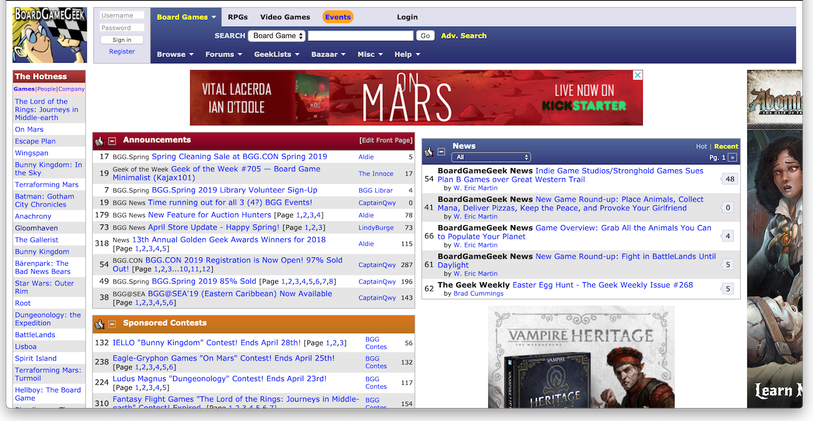
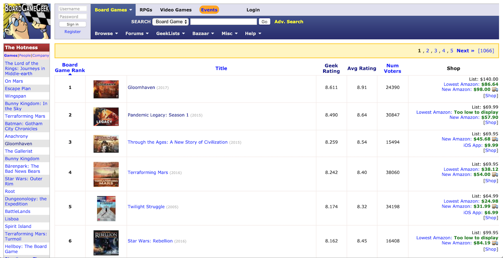
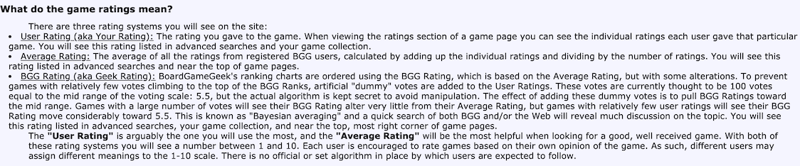
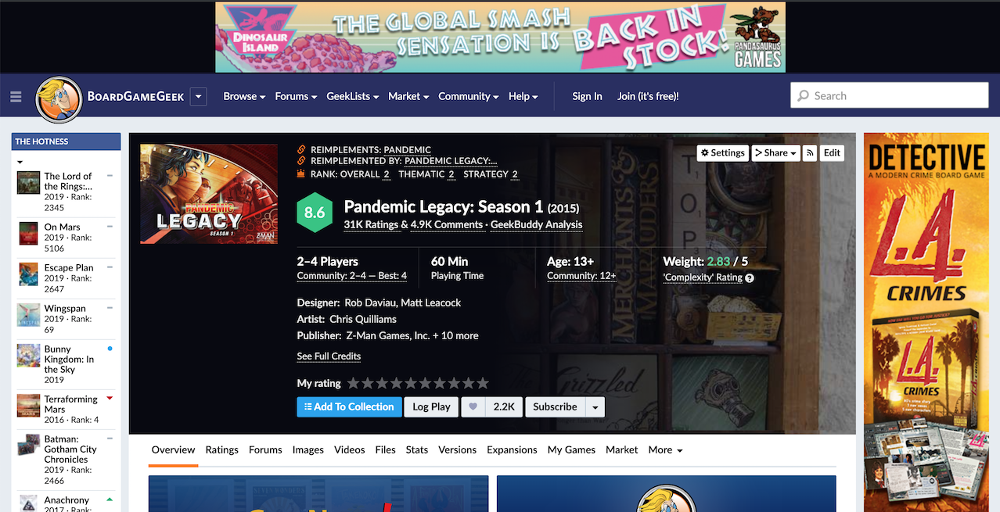
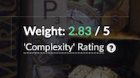

Introduction
This post will focus on the BoardGameGeek website, a popular site among tabletop board game players. It was chosen for this study because the site had been previously identified as one worthy of analysis. Even among people that frequently access the site, the website's design and layout leave much to be desired.
 The front page of the BoardGameGeek website, described by one user as "a mess."In order to assess the functionality and usability of the site, three participants were subjected to a usability test. The script for the test, available here, had the participants conduct a few tasks on the website while providing a commentary of their experience. The tasks were selected to reflect the sort of things for which a typical user might access the BoardGameGeek website. This included accessing information about specific board games and visiting the GeekStore.
The Participants
Three people were chosen to participate in a usability test of this website. Two of them had a passing familiarity with the website already while the third had never seen the site before. All of them had at least some familiarity with board games and the board game community. Demographically, all of them were men in their thirties who self-identified as "geeks," although two of them considered themselves much more regular board game players than the other.
The BoardGameGeek Site
The BoardGameGeek website was founded in 2000. It is a database website that features reviews, news, and other information about board games. There are forums for followers of games to discuss the game, ask questions, and share strategies. The site hosts images and videos of games, including a variety of user created content. It allows users to track which games they own, rate games, and even trade games with other users of the site. The site also hosts a store which sells games and related content.
All of the participants in the study observed that the front page of the site was extremely cluttered and difficult to navigate. One participant referred to the page as "busy" and "cluttered" while another described it as "a mess". One participant had a significant amount of time figuring out where anything was from the front page; with so much information presented from the very start, they felt overloaded and did not know where to begin.
The First Task: Review the Board Game List
One important element of the BoardGameGeek site is the ranked list of games; there is often a considerable amount of prestige in being a top ranked board game on the site. With that in mind, the first task that the participants were asked to perform was to find that list. The most direct way to find the list is to click Games link from under the Browse menu; this task was chosen because of the difficulty in finding the link. Of the three participants, none of them were able to find the list on their own. Given how significant this ranked list is among the type of users that would use the site, the difficulty in finding the list was quite surprising. As far as usability goes, this is an enormous red flag; given how often the "top ten" list of board games is referenced with the board game community, the fact that it's neither prominently displayed nor effectively labelled is a problem.
 The ever important "top ranked games" list of board games.All three participants thought that the list itself was relatively straightforward. One participant thought that the formatting was a bit peculiar, as the table cell for the game name is extremely large in contrast to the rest of the table contents. However, all participants were initially uncertain as to what parameter the list was sorted. The list shows both a Geek Rating and a Avg Rating, with no definitive indication of which parameter is being used until they clicked on each parameter (which re-sorted the list by that parameter).
One portion of the task asked the participant to determine how each parameter (Geek Rating and Avg Rating is calculated. Two of them made a presumption as to how the rating is calculated. None of the participants were able to quickly find the actual explanation (given in the FAQ page under the Help menu. From a usability standpoint, this is a poor choice; how the different ratings are calculated should be much easier to access from a page where it is used to sort items.
 The official explanation for how the different ratings are calculated.The Second Task: Look at a Game Page
According to the BoardGameGeek FAQ, the website has been undergoing "renovation" since 2015. Nowhere is this more apparent than the individual game page. As one participant commented, the individual game page was much better organized than the front page. Another liked how the page was "clear about what the game is about and what is going on."
 The layout for an individual game page on BoardGameGeek.Although the overall organization was better, there are still some peculiar issues. One part of the task was to find the "complexity" of the game and determine what that meant. This confused two of the participants because BoardGameGeek uses the word "weight" and "complexity" interchangeably on the same page.  In trying to determine how the complexity rating is calculated, all of participants clicked on the 'Complexity' Rating link instead of hovering over the ? with the pop-up explanation. As the link only opens a tab which shows the user votes for complexity, the participants ended up guessing as to how the rating is calculated (instead of relying on the definition provided on the pop-up tool-tip. Although it is good that the page has the pop-up definition (unlike the Geek Rating on the list)
As a follow up to looking at the game page, each participant was then asked to look at the "designer page" for one of the games designers, Matt Leacock. The designer page, which ostensibly has not been updated in the ongoing site redesign, was not as well received by the participants. Two participants had difficulty determining what other games the designer had made as the list is labeled as Linked Items instead of something more obvious. The one participant who had no trouble finding the list relied on their previous knowledge of the designer and his games; with that information, they were able to more readily notice the list.
The most significant observation from this section was that a lot of the information on the site was most easily understood by users who already had a significant understanding of the subject matter. Knowing a lot about board games makes finding information on the website more straightforward. In contrast, users with a lesser amount of knowledge about board games would have significantly more problems using the site.
The Third Task: The GeekStore
The final task was intended to be short and relatively quick. Over the years, the BoardGameGeek website developed its own store for selling specific products. Although it was originally limited to hard-to-find promotional items, over time the store has expanded to include a variety of items. The primary goal of the task was to see if the participant could even find the page for the GeekStore as, like so much of the site, individual pages can be difficult to find in the menu.
As expected, finding the GeekStore proved to be a minor challenge for two of the participants. Although they successfully went to the Bazaar menu item, both of the participants clicked on the first link, Geek Market, instead of Geek Store. One of the participants made it clear that they would not have expected a website like this to have multiple pages that sound like the name of a storefront. However, once the participants arrived at the GeekStore front page, they were able to correctly determine how the store worked.
Conclusions
Although BoardGameGeek is a large website with a considerable amount of useful information, the design, layout, and presentation create a variety of barriers to usability. Many of the pages are cluttered and difficult to navigate. Important parts of the site are difficult to access or appear under non-obvious menu titles. The presentation of parameters such as Geek Rating or Weight/Complexity is unclear and inconsistent. Overall, despite the utility of the information contained with the BoardGameGeek database, a lot of that utility is lost or minimized due to poor layout and design.